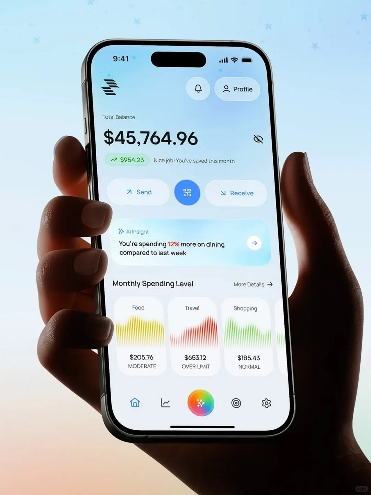
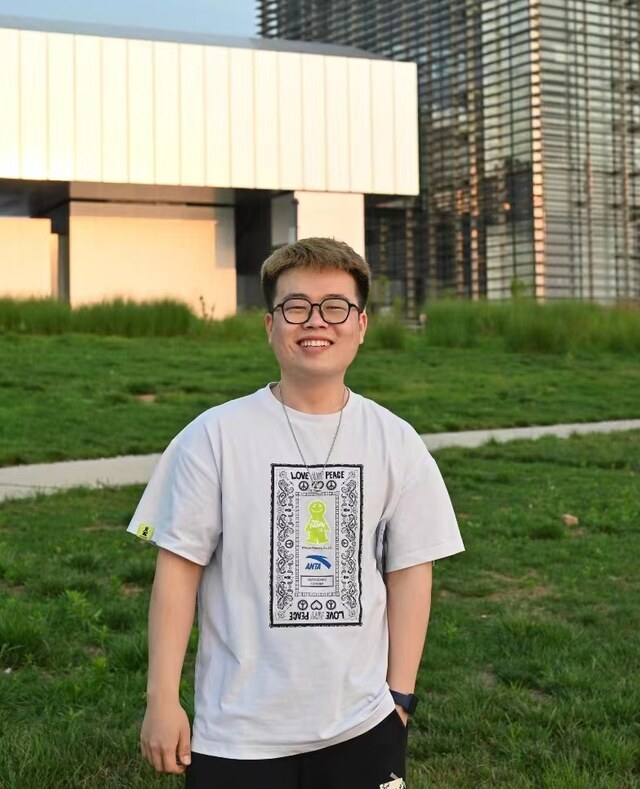

UI/UX Design 界面设计、交互原型、组件库搭建、多语言UI本地化适配你好！我是程家乐
UI/UX 设计师，也做网页、影像与内容。
多语言 UI 本地化 × AI 设计工作流
拥有 6 年设计实践经验，专注于界面交互、网页视觉与多语言产品体验，持续探索影像与内容创作，并将 AI 融入设计工作流，让创意从想法到落地更高效、更具质量。

设计与表达
连接界面、视觉与内容，让想法成为真实的体验
系统性的作品集
以作品为线索，串联每一次探索与成长的轨迹


AI 高效设计工作流
将AI工具深度融入设计工作全流程，用于需求梳理、方案发散、UI文案创作、多语言校对、素材预处理与内容辅助创作。以AI承担重复机械工作，人工把控视觉质量、交互逻辑与细节落地，大幅提升设计产出效率。
创意
设计
代码
产品
 创意
创意 设计
设计 代码
代码 产品
产品
工作经历
参与产品讨论，与产品经理和前端工程师协作，从视觉设计与用户体验角度提出方案，输出高质量设计成果。
负责禅道学院、融・项目管理社区平台、翰德恩改版、敏航咨询改版、敏捷之旅活动网页等多个网站的 UX/UI 设计与迭代。
配合禅道版本发布节奏开展抖音、小红书、IP 形象等流量矩阵运营及线上线下活动策划与复盘。
负责产品使用手册、宣传手册、宣传视频等对外物料制作及活动 VI 设计，提升品牌影响力。
负责 Fotoplay、Fotocollage、BabyGram 等多款 App 的 UI/UX 设计，覆盖新功能迭代、首页改版、AI 功能入口与流程设计，以及从 0 到 1 的产品界面设计。
与产品经理、前端工程师紧密协作，从视觉设计与用户体验角度提出建议与解决方案，跟进开发落地与上线效果。
参与产品需求讨论与竞品分析，结合业务目标与用户使用场景输出高质量设计方案。
引入并搭建 AI 辅助设计工作流，利用 AI 生成视觉素材与设计变体，提升设计产出与版本迭代效率。
关于我
我是一个对新鲜事物保持好奇的人。
我喜欢探索新的工具，探索前沿的设计，也探索人与数字世界之间更自然的连接。设计于我而言，不只是视觉的创造，更是一场关于体验、思考与表达的长期旅程。
我并非科班出身，而是在不断实践与学习中走向设计领域。六年的工作经历，让我从真实项目中积累经验，逐渐形成对产品、用户体验与视觉表达的理解。
从 UI/UX 到视觉设计，从影像记录到内容创作，我持续尝试跨越领域，将不同方向的灵感融入作品之中。如今，我专注于产品设计，希望通过设计与技术的结合，让每一次创造都不仅拥有美感，也产生真实价值。
我相信，细节藏着答案，热爱推动成长，而每一次探索，都会成为下一次创造的起点。